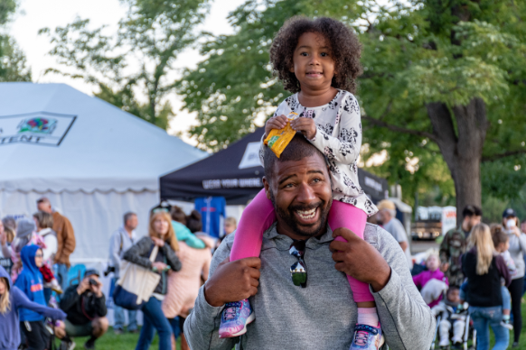

Father
Denver, Colorado
June 25, 2018
Father
Denver, Colorado
June 25, 2018
Moment, FemRock Fest
Austin, Texas
July 17, 2018
Smile
San Francisco, California
August 4, 2017
Haircut
New York City, New York
March 31, 2018
Flag, LGBTQIA March
Washington, DC
November 12, 2017
Street Art
Montreal, Canada
September 1, 2018